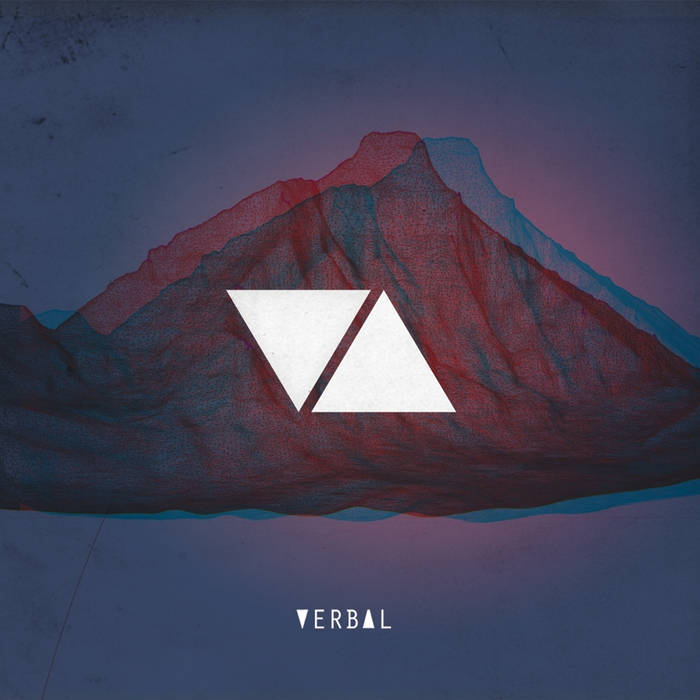

CHEAT DEAT, LIVE DEAD!
shizune
Some of the most emotional screamo I've ever heard without sacrificing accessibility in any form, and that's saying a lot for the genre. Most bands of the genre can only hope to have such an extremely solid album from start to finish. From the frist track, Shizune shows their sound is something that demands attention. A must-listen for any self-respecting fan of post-hardcore or screamo. Favorite track: Petit déjeuner en enfer.

Verbal
Verbal
La musica dei Verbal frammenta e ricompone linguaggi. Li usa tutti, ma non ne parla nessuno. E matematica che respira e sanguina. Tenta di ricomporre il mondo fin dove è possibile. Ne immagina un'utopia dove tutto conviva in un'alternanza di implosioni ed esplosioni. Non ha una faccia ma varie, non ha una lingua ma molte, non ha un genere ma tanti. Poliforme e poliglotta, inquieta e trans-genere. Anzi, trans-rock. Contamina math-rock e funk, post-rock cinematico e rumorismi. Vive di poliritmie e sovrapposizioni.
Arnia/Provincia
Cosmetic
We are noise made of songs. We are from Italy. We are lasting long. Includes unlimited streaming via the free Bandcamp app, plus high-quality download in MP3, FLAC and more.

Dissipatio HC
LLEROY
Some of the most emotional screamo I've ever heard without sacrificing accessibility in any form, and that's saying a lot for the genre. Most bands of the genre can only hope to have such an extremely solid album from start to finish. From the frist track, Shizune shows their sound is something that demands attention. A must-listen for any self-respecting fan of post-hardcore or screamo. Favorite track: Petit déjeuner en enfer.